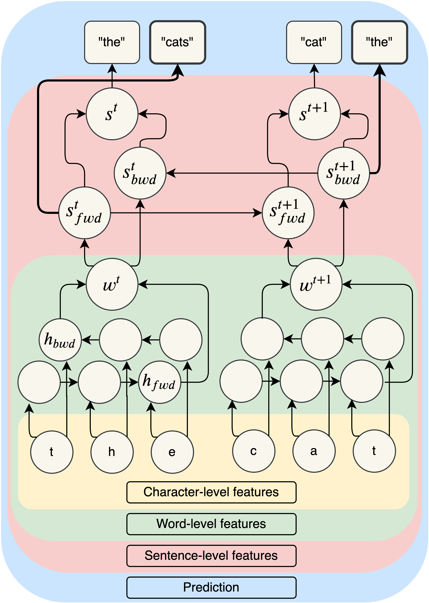

Improving Lemmatization of Non-standard Languages with Joint-Learning
Enrique Manjavacas (University of Antwerp)
Ákos Kádár (Tilburg University)
Mike Kestemont (University of Antwerp)
1 Lemmatization
Task Definition

Applications
- Linking to dictionary
- Text Classification (esp. for morphologically complex languages)
- Stylometry
- Topic Modeling (reduce vocabulary size)
Challenges
- Token-lemma disambiguation
- e.g. “living” -> “living”, “live”
(en) - e.g. “estado” -> “estar”, “estado”
(es)
- e.g. “living” -> “living”, “live”
- Morphological Complexity (variety of processes)
- Agglutination: el[ler][imiz][in] (of our hands) -> el (hand)
- Fusion: salt[a][ba][s] (he/she was jumping) -> salt[ar] (jumped)
- Ablaut: kutub (books) -> kitab (book)
Historical Languages
- Span a long historical period (e.g. middle ages)
- Present high genre specificity (charters, medicine, history)
- Lack a strong standard spelling system
Additional Challenging Aspect
- Token-lemma disambiguation
- Morphological Complexity
- Orthographic Variation
Orthographic Variation Examples
Implications of Orthographic Variation for Lemmatization
- Increases token-lemma ambiguities
- Sparsifies evidence for token-lemma mappings (due to higher token/type ratio)
2 Architecture
Encoder-Decoder

Modeling Sentential Context

Improved Sentence Encodings (Contribution)
Joint Learning
\(P_{lemma}(l^t_{1\ldots n}|w^t) = P(l_n|w^t, s^t) \cdot P(l^t_{1\ldots n-1}|w^t, s^t)\)
\(P_{LM}(w^t) = \boldsymbol{\gamma_{fwd}} P(w^t|s^{t-1}_{fwd}) + \boldsymbol{\gamma_{bwd}} P(w^t|s^{t+1}_{bwd})\)
\(P = P_{lemma} + \boldsymbol{\beta} P_{LM}\)
- Decrease \(\boldsymbol{\gamma_{fwd}}\) and \(\boldsymbol{\gamma_{bwd}}\) based on dev accuracy
- Use \(\boldsymbol{\beta}\) to rescale LM loss
3 Corpus
Historical Languages
- Selection of open-source 9 corpora
- Language coverage:
- Latin
- Middle-low German
- Medieval French
- Historical Slovene
- Medieval Dutch (Corpus Gysseling)
Standard Languages
20 Languages from the Universal Dependencies
Statistics

4 Baselines
- Strongest non-neural data-driven lemmatizers
- Based on edit-tree induction
Edit-tree Induction

Morfette (Chrupała et al. 2008)
Beam-search decoding of edit trees and POS https://github.com/gchrupala/morfette
Lemming (Cotterell et al. 2015)
Second-order CRF decoding of edit-trees and POS http://cistern.cis.lmu.de/lemming/
5 Evaluation
- Accuracy of known, unknown and ambiguous tokens
- (Un)known & ambiguous is empirically determined based on train/dev split
6 Results
Historical Languages

Standard Languages
How informative is averaging over typologically different languages?
Different inductive biases may benefit some languages more than others
Results by Morphological Typology
Type 1 bg, cs, lv, ru, sl
Type 2 et, fi, hu, tr
Type 3 de, en, es, fr, it, nb

7 Discussion
Limits of edit-tree induction

Error reduction of best neural vs best tree-induction by #Trees (Spearman R=0.79)
How does joint LM learning help

Error reduction of SentLM vs Sent by Ambiguity (Spearman R=0.53)
Why does it help?

Diagnostic classifiers trained on frozen encodings to predict morphology
8 Conclusions
- Historical Languages pose additional difficulties to lemmatizers
- Edit-trees are challenged by spelling variation
- Improvements can be gained by fine-tuning the sentence encodings
- Learnt encodings reflect morphological information (which is costly)
9 Thank you
- Download & Preprocessing Scripts: https://www.github.com/emanjavacas/pie-data
- Sequence Labeling Framework: https://www.github.com/emanjavacas/pie
- This presentation: https://emanjavacas.github.io/slides-content/minneapolis19